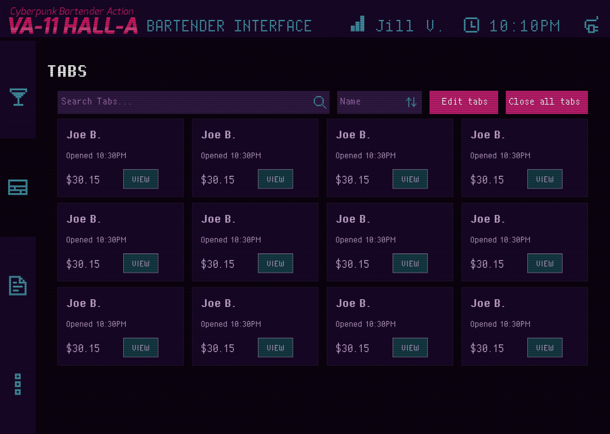
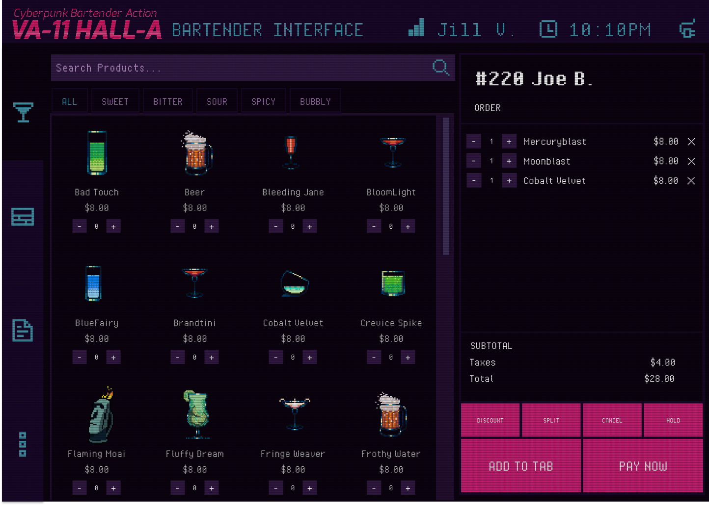
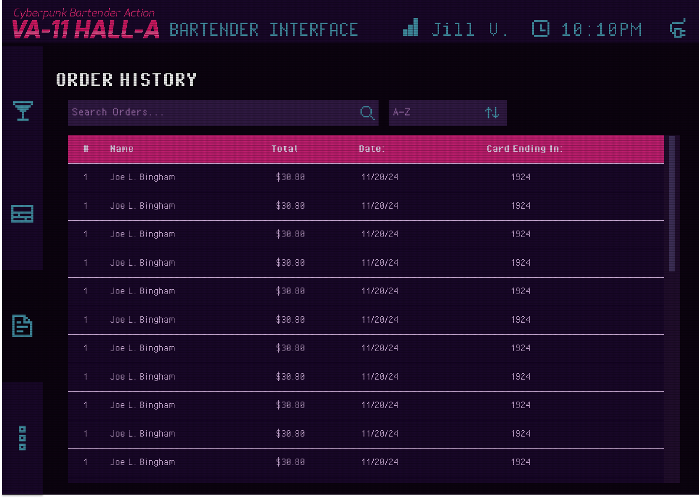
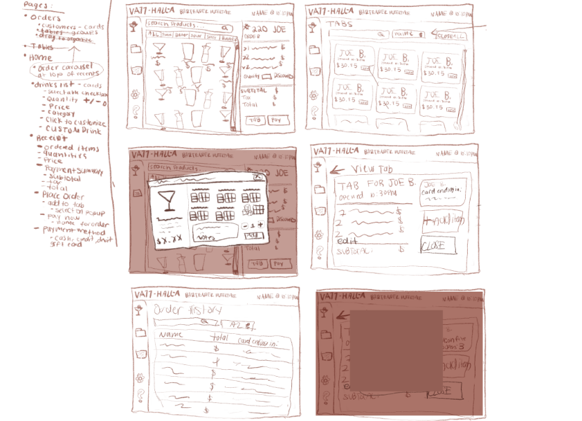
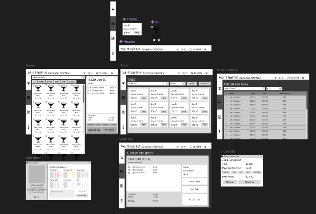

VA-11 Hall-A Bar POS System
UI Design Case Study
A specialized Point of Sale (POS) system designed specifically for bartenders at the fictional cyberpunk bar VA-11 Hall-A. This project reimagines traditional restaurant POS interfaces to address the unique workflow and needs of bartenders in a high-volume, fast-paced environment.

Project Overview
The Challenge
Most POS systems are designed for restaurant environments with table management as a core feature. However, bars have fundamentally different needs centered around tab management, quick drink ordering, and rapid payment processing.
This project required designing a system specifically tailored to bartenders' unique workflow.
My Approach
I conducted user research on bar operations, analyzed existing POS systems, and identified key pain points in bartender workflows. The design prioritizes speed, intuitive navigation, and a cyberpunk aesthetic that matches the VA-11 Hall-A universe.
Key Objectives
- Streamline tab management for multiple customers
- Enable rapid drink ordering with minimal clicks
- Create an order history system for fast referencing
- Design for high-pressure, fast-paced environments
- Incorporate a cyberpunk aesthetic consistent with the bar's theme
Theme Inspiration
Research & Discovery
1. Tab-Centric Workflow
Unlike restaurants where tables are stationary, bar customers often move around, making tab management the central organizing principle. The interface needed to prioritize quick tab creation, modification, and payment above all else.
Research Insight
Bartenders need to process transactions in under 10 seconds during peak hours, requiring extremely efficient tab management workflows.

2. Rapid Drink Selection
Bartenders need to access common drinks instantly without scrolling through complex menus. I designed a customizable quick-select panel with favorite drinks and recent orders for maximum efficiency.
Research Insight
Bartenders rely heavily on muscle memory and quick access to frequently ordered drinks, with most service during peak hours involving repetitive orders of popular menu items rather than complex custom drinks.

3. Order History & Recall System
Bartenders often need to quickly resolve payment disputes, process refunds, or verify previous transactions when customers have questions about their bills. Traditional systems make this difficult by burying transaction details deep in complex menus, forcing staff to navigate away from current orders during busy service periods.
Research Insight
Quick access to complete transaction history—including payment methods, timestamps, and order details—is essential for resolving customer disputes efficiently without disrupting service flow during peak hours.

Design Process
Research & Analysis
Studied existing POS systems, identified bar-specific needs, and analyzed bartender workflows during different service volumes.
Wireframing
Created low-fidelity wireframes focusing on tab management, quick ordering, and payment processing workflows.
Visual Design
Developed a cyberpunk aesthetic with neon accents, dark backgrounds, and futuristic elements that match the VA-11 Hall-A universe.
Prototyping
Built interactive prototypes in Figma with complex interactions and transitions to simulate the actual user experience.

Initial Sketches
Early ideation exploring different layouts and workflows for the bar POS system.

Wireframes
Structural planning of the interface focusing on functionality and user flow.
Final Design

Key Features
Tab Management
Quick creation and navigation between customer tabs with real-time order tracking and payment status.
Quick Order Panel
Customizable drink shortcuts and recent orders for rapid selection during busy periods.
Order history
Comprehensive order history is available for view straight from the navbar.
flexible Payment methods
Easy bill splitting for groups with multiple payment methods and itemized receipts; can put an order on hold; can cancel order.
Time & User Visibility
The current time and current logged in user is visible at all times at the top of the POS.
Cyberpunk Aesthetic
Visual design that matches the futuristic, neon-drenched world of VA-11 Hall-A.
Reflection
This project challenged me to think deeply about specialized user needs and how interface design must adapt to different environments. While restaurant POS systems focus on table management, bar systems require tab-centric thinking and rapid drink ordering capabilities.
The most valuable insight was understanding how bartenders' cognitive load increases during peak hours, requiring an interface that minimizes decision-making and maximizes muscle memory. The customizable quick-select panel became the cornerstone of this design.
If I were to expand this project, I would conduct usability testing with actual bartenders to refine the workflows further. I'd also explore integration with mobile ordering systems and develop a companion app for customers to place orders directly from their seats.